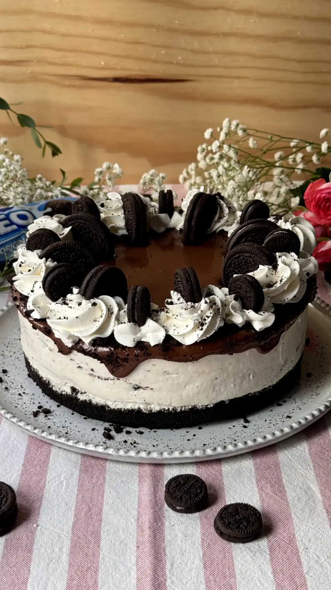

Cheesecake de Oreo

Disfruta de un delicioso cheesecake de Oreo sin horno, con una base crujiente de galletas y un relleno cremoso. Es un postre fácil de preparar, perfecto para cumpleaños, reuniones familiares o simplemente para darte un gusto.